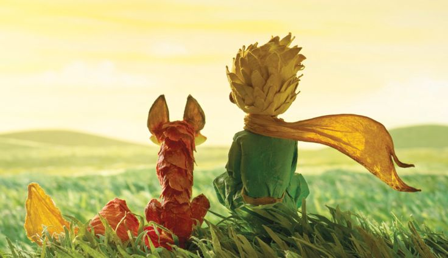

Entonces aparecio el zorro.
-¿Quien eres? -le pregunto el principito, y añadio- Te ves muy hermoso.
-Soy un zorro -le dijo el zorro.
-Ven a jugar conmigo -propuso el principito-. Me siento triate.
-No puedo jugar contigo -respondio el zorro-. No estoy domesticado.
-¿Que significa "domesticado"? -pregunto el principito, y siguio repitiendo la pregunta hasta que el zorro respondio.
-Significa establecer lazos -dijo el zorro-. Solo eso -continuo-. Para mi, tu no eres nada mas que un niñito,
y no te necesito. Y tu no me necesitas a mi. Para ti, no soy mas que un zorro, pero si me domesticas, entonces nos
necesitaremos el uno al otro. Para mi, seras unico en todo el mundo. Para ti, sere unico en todo el mundo...
-Ya voy comprendiendo -dijo el principito-. Hay una flor en otro planeta... creo que me ha domesticado...
Al principio, el zorro parecio emocionado al enterarse de que el principito venia de otro planeta. Sin embargo,
pronto perdio interes. El zorro cazaba pollos, pero en el planeta del principito no habia pollos.

-Por favor, ¡domesticame! -le pidio el zorro-. Uno solo comprende las cosas que uno domestica. Los hombres ya no tienen tiempo
de comprender nada. Compran cosas que se hacen en las tiendas, pero no hay una tieneda en ninguna parte en la que uno pueda
comprar amistad, asi que los hombres ya no tienen amigos. Si quieres un amigo, domesticame...